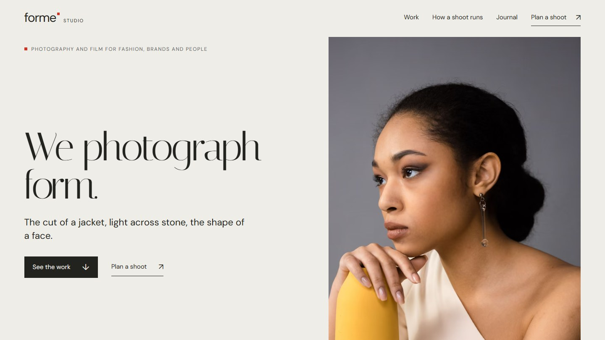
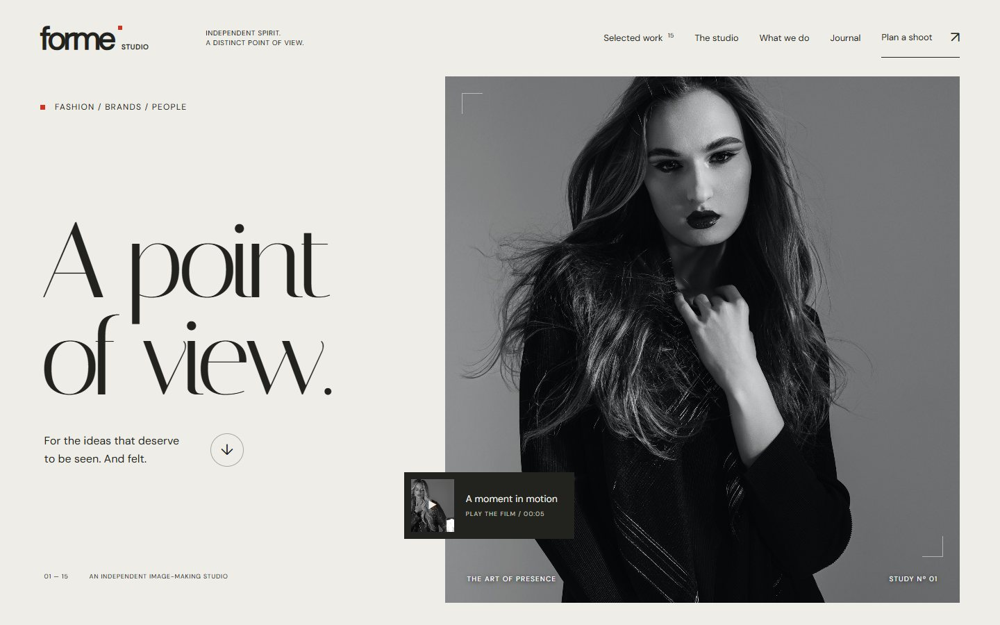
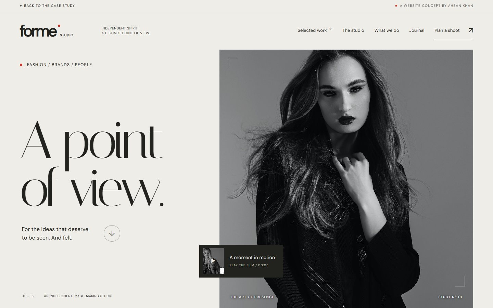
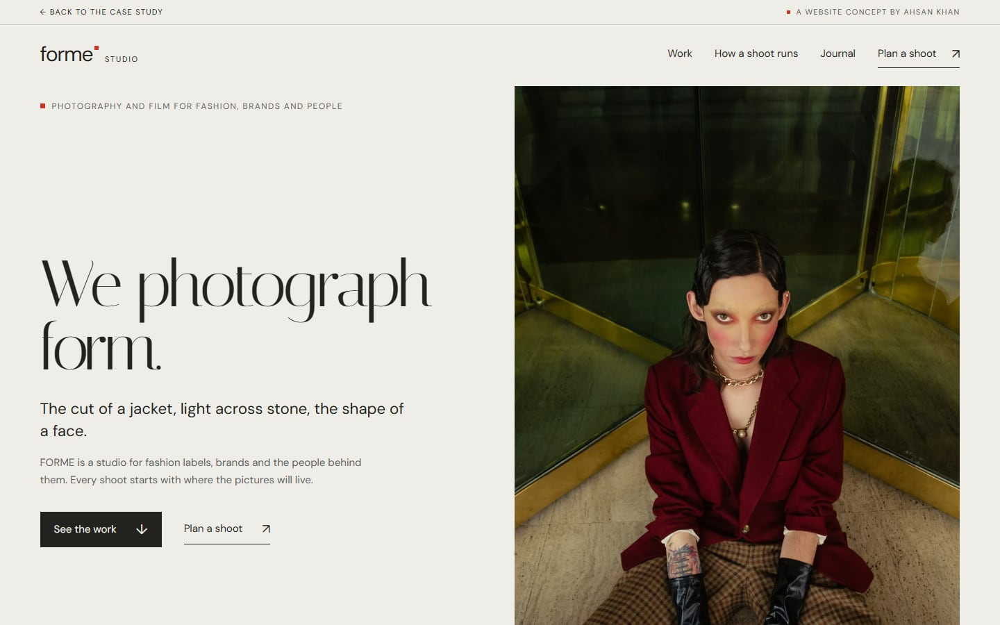
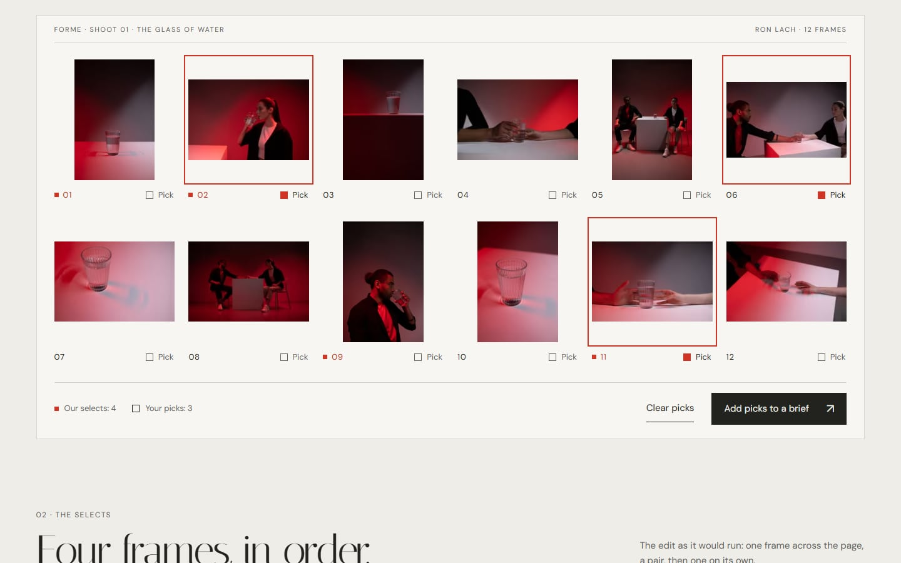
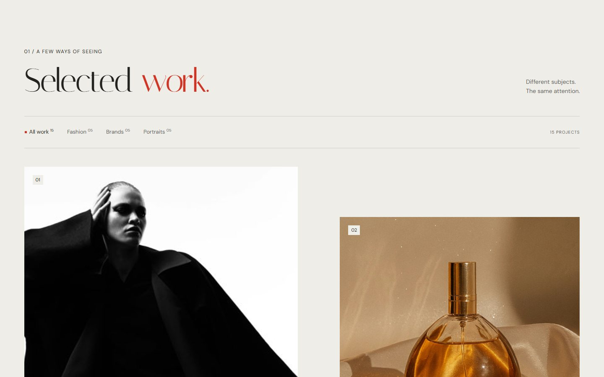
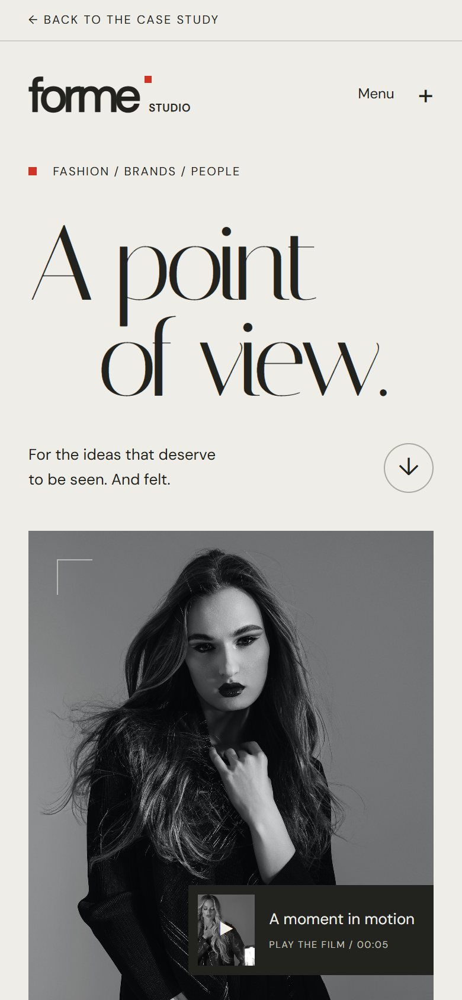

10Website design & build · Fictional website concept
The most important work on a website is the part nobody compliments.
One headline, followed from the first version to the live page.
Scroll: write, design, build
The photos are stock images standing in for a studio’s own work. On a real project, the client brings the pictures and I build the site around them.

01Write
Start with what a client asks.
“A point of view.” sounded premium. It never said what the studio shoots.
The first draft: A point of view.
AK · 01A mood isn’t an answer.
Then say it plainly.
Three plain words say what the studio does. The pictures show how.
The rewrite: We photograph form.
02Design
Give the picture half the page.
Grey boxes first. The line and one sentence on the left, one frame on the right.
AK · 02The photograph is the product.
Make it feel like FORME.
Warm paper, soft black ink and one red square. A fine, high-contrast serif.
03Build
Ship the real page.
One full scroll of the homepage is about 0.6 MB, down from 6.3 MB.
AK · 03Live. New shoots slot right in.

- 01Write
- 02Design
- 03Build
I wrote it, designed it and built it.
From the first draft to the live page, you talk to me.
Open a shoot ↗For the curiousThe video, the full kit, every version and how it was checked
- Project
- Self-initiated website concept
- Role
- Structure, copy, design & build
- Deliverable
- Studio site with six shoots, films, journal & brief builder
- Tools
- HTML, CSS & JavaScript · Node build scripts
The kit: what FORME Studio shipped, beyond the pages
Measured qualityLighthouse and axe, run October 28, 2026
- 99Performance
- 100Accessibility
- 100Best practices
- 9/10SEO checks
- Accessibility issues (axe, WCAG 2.1 AA)
- 0
- across 6 pages
- Homepage weight
- 317 KB
- everything a first visit downloads
- Largest content painted
- 2.0 s
- simulated mid-range phone, slow 4G
- Layout shift
- 0
- 0.1 or less counts as good
Homepage measured with Lighthouse 12 (mobile) on /sites/forme-studio/, served locally without compression, so live numbers should be at least this good. The one SEO check that fails is “page can be indexed”: demos are kept out of search on purpose because they’re fictional. Rerun with scripts/kit/measure-quality.mjs.
The receipts
The brief
What does a photographer or fashion brand need from a website, when the pictures already do most of the talking?
Image-led businesses sell with pictures, so their sites often become a wall of them, with nothing to say who the work was for, how a shoot runs or how to start one. FORME tests the structure I would build for any studio or label: the photographs lead, the words answer a client’s questions, and asking for a shoot feels like the start of a conversation.
- 01Let the photographs lead, at every screen size
- 02Say what each shoot was for, not just how it looks
- 03Explain how a shoot works before anyone has to ask
- 04Turn “get in touch” into a brief both sides can use
- 05Make a new shoot easy to add
All 6 versionsPublished, reviewed, refined.
FORME went up as a public preview first. A review in the browser found a few small problems, fixed when it moved into this portfolio. A second review, against strong studio sites, led to a tighter edit, and then to showing the work the way studios sell it: as shoots.
The studio, published
“A point of view.”
The complete concept on a public preview: fifteen projects in three categories, two films, four services, a three-step process, three journal notes, a brief builder and a credits page.
- 15 projects
- 3 journal notes
- Brief builder
- Credits page

Checked in a real browser
Every page at 320, 390 and 1440 pixels wide, with axe and a click through every interaction. Everything worked. Small red text measured 4.3:1, just under the 4.5:1 minimum, and one strip lost a word at 320 pixels.
In the portfolio
“A point of view.”
Small red text moved to a darker red (4.8:1) and the red call-to-action band to white text (5.0:1), keeping the brand red. At 320 pixels the strip now drops a word by design instead of clipping it, and a slim bar on every page leads back to this case study.
- Case-study bar
- Contrast fixes
- 320px strip

Measured against strong studio sites
Compared with leading photography and film studios, FORME read like a premium template with stock pictures poured in: unrelated single frames, soft portrait crops of landscape photographs, headlines built on one formula, 8 to 9px labels and 6.3 MB for a full scroll of the homepage.
The tighter edit
“We photograph form.”
One strong hero frame and plain headlines. Every photograph shown whole at its own shape, in a deliberate sequence; films in true color, playing only on request; services and process merged into how a shoot runs; nothing under 11px; and a full scroll of the homepage down from 6.3 MB to about 0.6 MB.
- How a shoot runs
- Hero and headlines
- Frames shown whole
- Films on request
- Page weight

Shoots, not pictures
“We photograph form.”
The work became six shoots, each nine to twelve frames from one session by one photographer. Every shoot opens as a contact sheet with the selects marked by the red square, plays its selects in sequence and shows one frame cropped for a banner, a feed post and a story. Visitors pick frames for their brief, the brief builder became four steps with a printable page, and every picture and film on the site now comes from the shoots.
- Contact sheets
- Picks
- Crops for three placements
- Printable brief
- Work as shoots
- Brief in four steps
- Films from the shoots
Hero 
Contact sheet
Palette & typePaper, ink and one red square.
The interface steps back so the photographs carry the color: warm paper, soft black ink, a fine high-contrast serif for headlines, and one red used sparingly.
#EEEDE8Page ground#22231FText and frames#62625ACaptions and supporting copy#CFCEC7Rules and dividers#CF3425The mark, a few markers and the call to action#C22E1FRed at small sizes, for contrast

Neutral ground, colored pictures
The page stays paper and ink, so a red suit or a gold earring is the brightest thing on the screen.
Every frame at its own shape
Frames keep their proportions on the contact sheet, in the strips of selects and in the sequence. Only the banner, feed and story outputs crop, and each crop centers on a focal point stored with the frame.
The red square marks the edit
The square from the wordmark marks the studio’s selects on every contact sheet. A visitor’s own picks get an outline instead, so the studio’s edit and the client’s choices never mix.
Every frame opens whole
Any frame on a contact sheet or in the sequence opens in a viewer that fits it on a paper mount, uncropped, with its number, its credit and a Pick button. The arrow keys step through the shoot. On a phone the picture fills the screen first.
Build & checksA light site a studio could run.
Plain HTML, CSS and JavaScript, with no framework to maintain. Each shoot is one record in a data file: its frames with sizes, focal points and alt text, the selects, the brief, the credit and the film. One script builds every shoot page from the same template, and another makes every image size.
- HTML
- CSS
- JavaScript
- Node build scripts
- AVIF, WebP and JPEG
- Native dialogs
- localStorage
- Print CSS
- Self-hosted fonts
- MP4 video
What it does
- Six shoots of nine to twelve frames, each from one session by one photographer, with fashion, brands and portraits filters
- One shoot template: the contact sheet with the selects marked, the selects in sequence, and one frame cropped for a banner, a feed post and a story
- Picks: a visitor marks frames on any contact sheet, kept in their browser, and they go into the brief as references
- A frame viewer with the whole frame, its credit and a Pick button, stepped through with the arrow keys
- Three silent films from the shoots that load only when played, each also cut to 9:16 for a story
- A real contact sheet beside the three steps of how a shoot runs
- A journal of three notes, illustrated with frames from the shoots
- A brief builder in four steps that hands back a text file and a printable one-page brief with the picks as thumbnails; nothing is sent
How it was checked
- No console errors or failed requests on any of the twelve pages, including all six shoots
- No sideways scroll at 320, 390, 768, 1024, 1280 or 1440 pixels wide
- No axe violations on any page at any of those widths
- Picks, the brief and its print view, the viewer, the filters and every film tested with a mouse and with the keyboard alone, with reduced motion on and off
- Every frame comes in five widths as AVIF and WebP, with a JPEG fallback, and the browser loads the one the screen needs. A full scroll of the home page is about 0.6 MB on a standard laptop screen and 1 MB on a high-density one, before any film plays
- Films play only when pressed, one at a time. Page motion stops under reduced-motion or Save-Data settings, and a footer button pauses it
- Every frame and film is credited, with its license, on a credits page grouped by shoot
- No text below 11px, and the display serif only at 32px and up
Who brings what
A photography website is a collaboration. The studio owns the pictures; my job is everything that frames them and leads to the next booking.
What I build
- The site map and page types: home, work, project, services, process, journal, inquiry
- One shoot template: brief, contact sheet, selects, crops and credits
- The words around the work: pages, services, process and journal
- A design system: type, color, crop ratios and motion
- The build: responsive, fast and accessible, tested on phones
- The inquiry flow, and a handoff so new work is easy to add
What the studio brings
- Photographs and films
- The story behind each shoot: who it was for and what it had to do
- Services, availability and how you like to work
- Credits for the team on each shoot
- The final word on voice and tone
On FORME, credited stock images stand in for the studio’s own work.
How I’d build yours
The same six steps work for a photographer, a studio or a fashion label.
Start with the work and who books it
We go through your pictures together and agree who the site is for (brands, agencies, editors or private clients) and which inquiries you want more of.
Plan the structure
A site map and page types: home, work, project, services, process, journal, inquiry. A fashion label swaps services for collections, lookbooks and stockists.
One template for every shoot
On FORME this exists: one record per shoot (frames, focal points, selects, brief and credits) and one script that builds its page, contact sheet, sequence and crops. A new shoot or collection slots in without a redesign.
Design the frame
Type, color, crops and motion chosen to suit your pictures rather than compete with them.
Write the words around the work
Project briefs, service pages in your clients’ language, and journal notes that answer the questions people ask before they book.
Build, test and hand off
A fast, accessible site tested on phones, and a short guide to adding your next shoot.
Ahsan Khan: concept, positioning, copy, image selection, design and build. Photographs and films by the photographers credited on the site.
FORME is a fictional studio and a portfolio concept, not commissioned client work. Its photographs and films are credited stock images used as stand-ins; none were taken by Ahsan. No client, booking or business outcome is claimed.